Kalkulator porównuje umowę o pracę z B2B. Pokazuje, ile naprawdę zostaje na rękę po uwzględnieniu urlopu, chorobowego, ZUS-u i podatku, a przy każdej kwocie wyjaśnia, skąd się wzięła.
Zrzuty pochodzą z wersji demonstracyjnej i pokazują przykładowe kwoty. Czerwone numery na zrzutach odpowiadają numerom w opisie pod nimi. To symulacja, nie porada podatkowa - przed decyzją warto sprawdzić wynik z księgowym.
Pierwsze kroki
Przy pierwszym uruchomieniu kalkulator pokazuje 5 krótkich notatek. Każda wskazuje jedną część ekranu czerwonymi narożnikami, jak szczegół na rysunku technicznym.
Dalej i Wstecz przechodzą między notatkami. Na klawiaturze działają też strzałki w prawo i w lewo.
Pomiń albo klawisz Esc zamyka notatki od razu. Na telefonie zamyka je też przycisk „Wstecz”.
Notatki można obejrzeć jeszcze raz przyciskiem Pokaż pierwsze kroki na dole strony, obok odnośnika do tej instrukcji.
Aplikacja na komputerze pamięta, że notatki zostały obejrzane. Wersja demonstracyjna niczego nie zapisuje, więc pokazuje je przy każdym otwarciu.
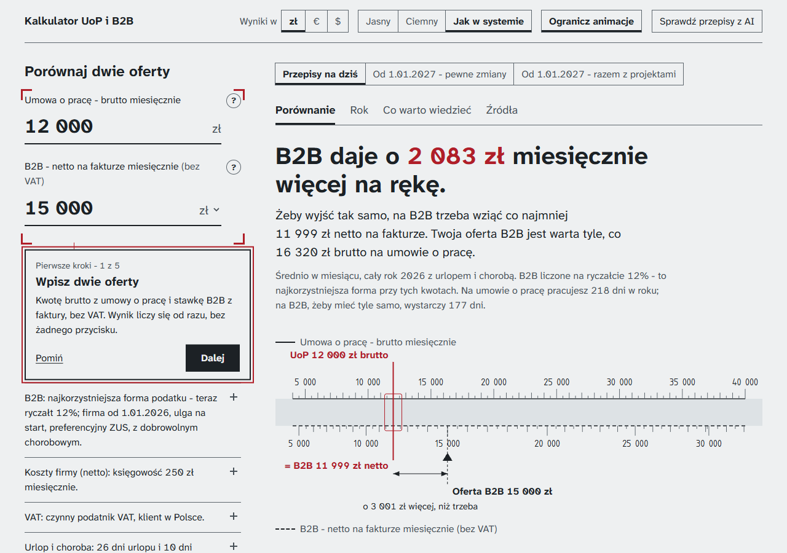
Pierwsza notatka na komputerze.
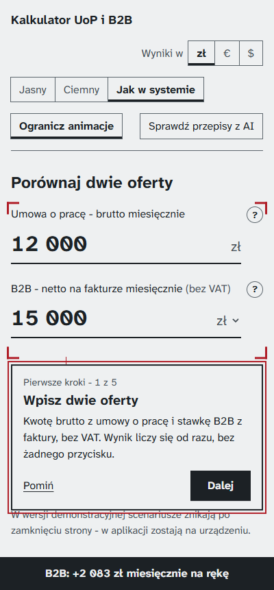
Ta sama notatka na telefonie.
Ekran główny
Wystarczą dwie kwoty. Wszystko inne ma rozsądne wartości domyślne, więc wynik jest dokładny od pierwszej sekundy i zmienia się przy każdej zmianie, bez przycisku „Oblicz”.
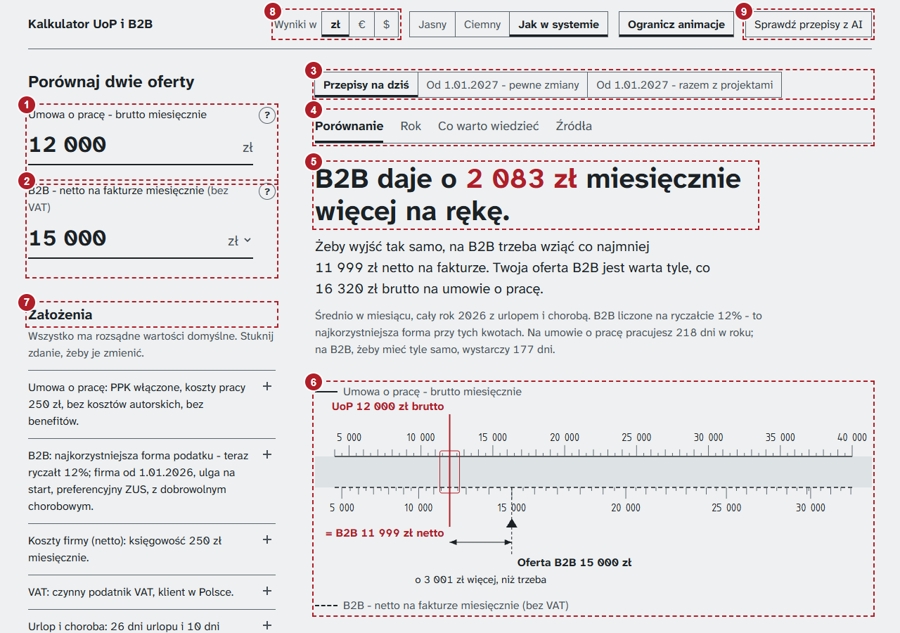
Umowa o pracę - brutto miesięcznie. Kwota z umowy, przed składkami i podatkiem.
B2B - netto na fakturze miesięcznie. Stawka bez VAT. Obok można wybrać walutę stawki: złote, euro albo dolary. Kwota w obcej walucie jest przeliczana po średnim kursie NBP, a pod polem widać wynik w złotych i datę kursu.
Według jakich przepisów liczyć. „Przepisy na dziś” to ustawienie domyślne. Dwa pozostałe przyciski liczą według przepisów od 1 stycznia następnego roku - same pewne zmiany albo razem z projektami ustaw. Gdy wybrany jest inny wariant niż „na dziś”, nad wynikiem pojawia się wyraźny napis i przycisk powrotu.
Zakładki. „Porównanie”, „Rok”, „Co warto wiedzieć” i „Źródła”. Między zakładkami można przechodzić strzałkami na klawiaturze.
Odpowiedź. Jedno zdanie mówi, która oferta daje więcej na rękę i o ile miesięcznie. Pod nim jest kwota, którą trzeba wziąć na B2B, żeby wyjść tak samo, oraz ile brutto na umowie o pracę jest warta oferta B2B.
Suwak. Dwie podziałki do sprawdzania innych kwot (opis niżej).
Założenia. Urlop, choroba, podatek, ZUS i koszty firmy zapisane zdaniami. Kliknięcie zdania rozwija jego pola.
Waluta wyników. Wyniki można pokazać w złotych, euro albo dolarach. Obliczenia zawsze idą w złotych, bo w złotych są podatki i ZUS.
Sprawdź przepisy z AI. Okno, w którym Claude sprawdza, czy kwoty w kalkulatorze są aktualne (opis niżej).
Dymki „?”
Przy prawie każdym pojęciu jest znak „?”. Na komputerze wystarczy najechać na niego myszą, na telefonie stuknąć. Kliknięcie przypina dymek, a drugie kliknięcie albo Esc go chowa.
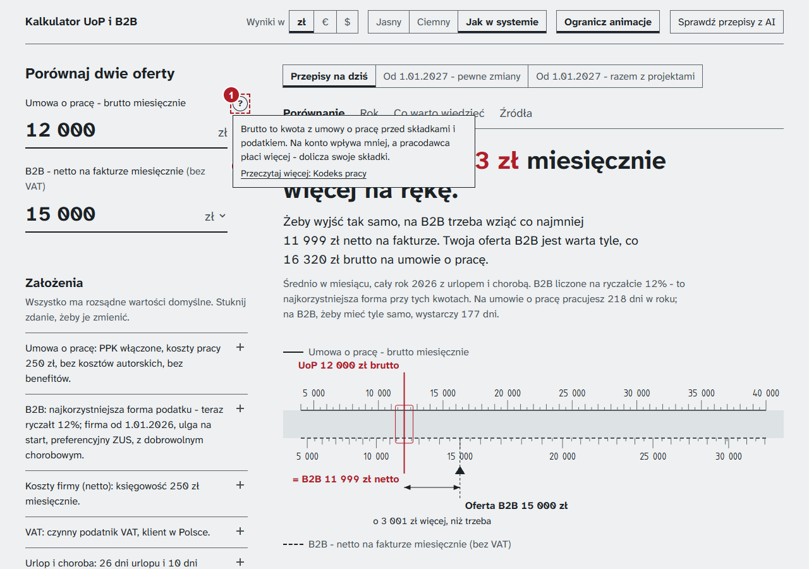
Znak „?” przy polu z kwotą brutto. Dymek wyjaśnia pojęcie prostym językiem.
Przeczytaj więcej. Większość dymków kończy się odnośnikiem do przepisu albo strony urzędu.
Suwak - dwie podziałki
Górna podziałka to umowa o pracę brutto, dolna to B2B netto na fakturze. Kwoty, które dają tyle samo na rękę, stoją dokładnie naprzeciw siebie. Dzięki temu jednym ruchem widać, ile trzeba wziąć na B2B przy innej pensji, i odwrotnie.
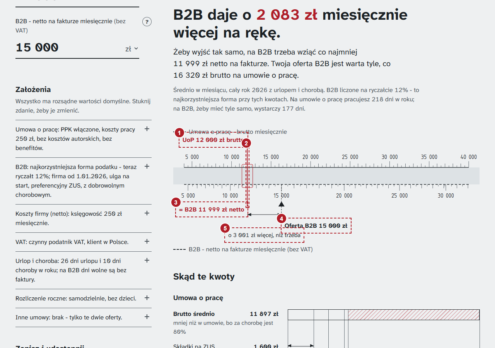
Kwota umowy o pracę w miejscu czerwonej kreski.
Czerwona kreska. Przesuwa się myszą, palcem albo strzałkami na klawiaturze (Page Up i Page Down robią większe kroki). Razem z nią zmienia się kwota umowy o pracę w polu po lewej.
Ile na B2B daje tyle samo na rękę. Kwota na dolnej podziałce naprzeciw kreski.
Oferta B2B. Trójkąt pokazuje wpisaną stawkę B2B. Też da się go przesunąć.
Różnica między ofertą B2B a kwotą, która daje tyle samo co umowa o pracę.
Skąd te kwoty
Pod suwakiem obie umowy są rozpisane jak wymiary na rysunku technicznym. Każda część pensji ma nazwę, kwotę i własny odcinek: składki na ZUS, składka zdrowotna, podatek, PPK albo koszty firmy i na końcu „na rękę”.
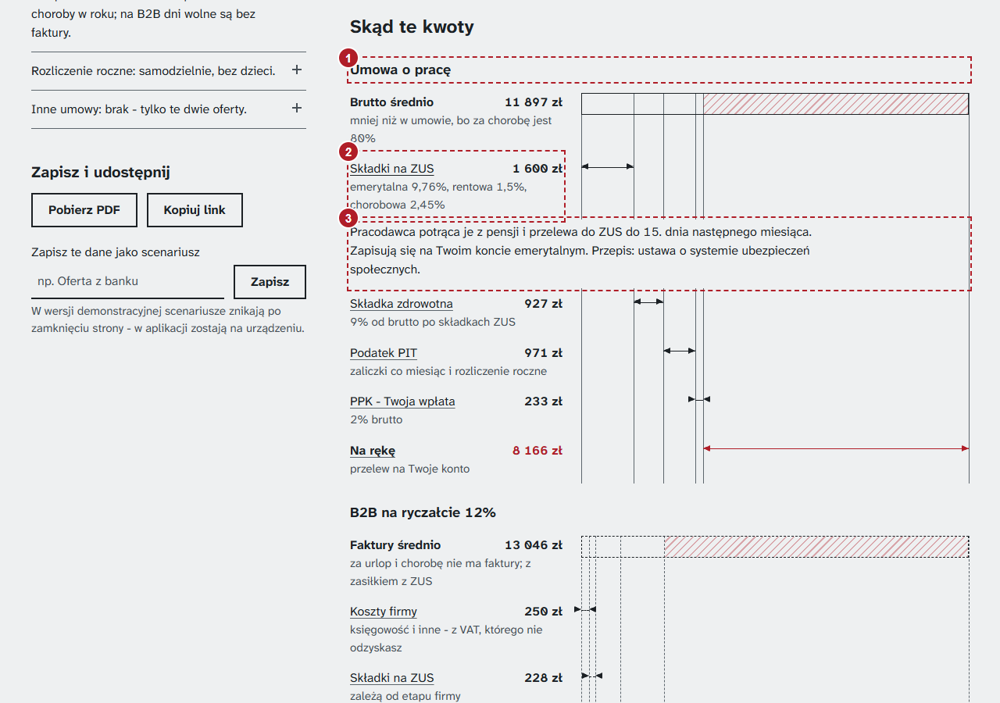
Umowa, której dotyczy rozbicie. Niżej jest takie samo rozbicie dla B2B, w wybranej albo najkorzystniejszej formie podatku.
Część pensji. Kliknięcie nazwy rozwija wyjaśnienie.
Wyjaśnienie - kto płaci, komu, do kiedy i na podstawie jakiego przepisu.
Kwoty są średnimi miesięcznymi z całego roku, z urlopem i chorobą. Dlatego brutto średnio bywa niższe niż w umowie - za dni choroby pracodawca płaci 80%.
Przy innej stawce B2B
Wykres pokazuje, o ile B2B daje więcej albo mniej na rękę niż ta sama umowa o pracę, gdyby stawka B2B była inna. Wszystkie założenia zostają te same.
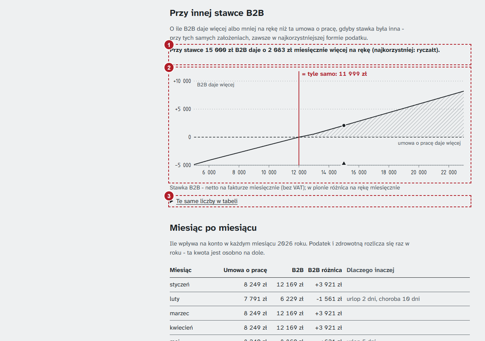
Odczyt. Zdanie mówi, ile daje B2B przy wskazanej stawce i która forma podatku jest wtedy najkorzystniejsza.
Wykres. Po najechaniu myszą odczyt pokazuje stawkę pod kursorem. Na klawiaturze stawkę zmieniają strzałki. Czerwona linia to stawka, przy której obie umowy dają tyle samo.
Te same liczby w tabeli - dla osób, które wolą tabelę albo korzystają z czytnika ekranu.
Miesiąc po miesiącu i zmiany przepisów
Tabela pokazuje, ile wpływa na konto w każdym miesiącu roku. Miesiące różnią się, bo na B2B za urlop i chorobę nie ma faktury, a na umowie o pracę za chorobę jest 80% pensji.
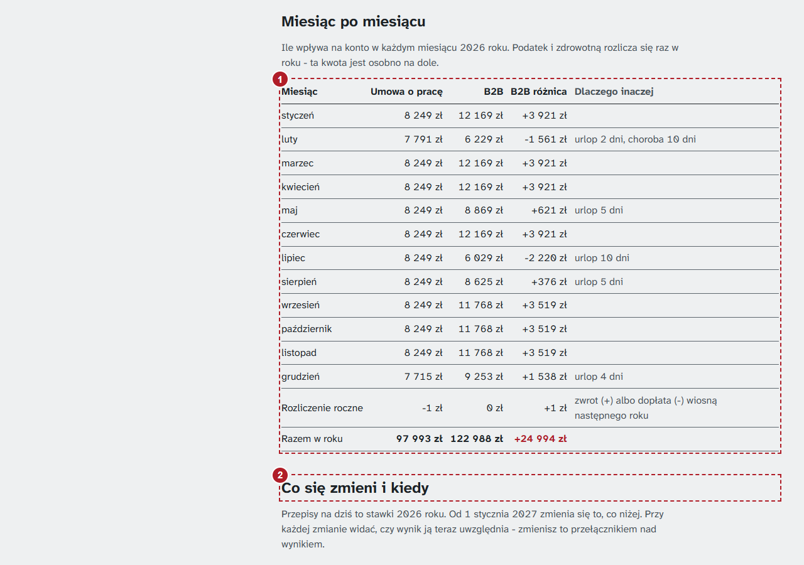
Tabela miesięcy. Kolumna „Dlaczego inaczej” podaje powód innej kwoty, na przykład urlop albo chorobę. Na dole jest rozliczenie roczne (zwrot albo dopłata wiosną następnego roku) i suma za rok.
Co się zmieni i kiedy. Lista zmian przepisów od 1 stycznia następnego roku. Przy każdej widać, czy jest pewna, czy czeka na podpis, i czy wynik ją teraz uwzględnia.
Założenia
Wszystkie ustawienia są zapisane zdaniami, które mówią, co przyjęto. Kliknięcie zdania płynnie rozwija pola tej grupy. Grupa ze zmienionymi wartościami ma napis „zmienione” i przycisk przywrócenia wartości domyślnych.
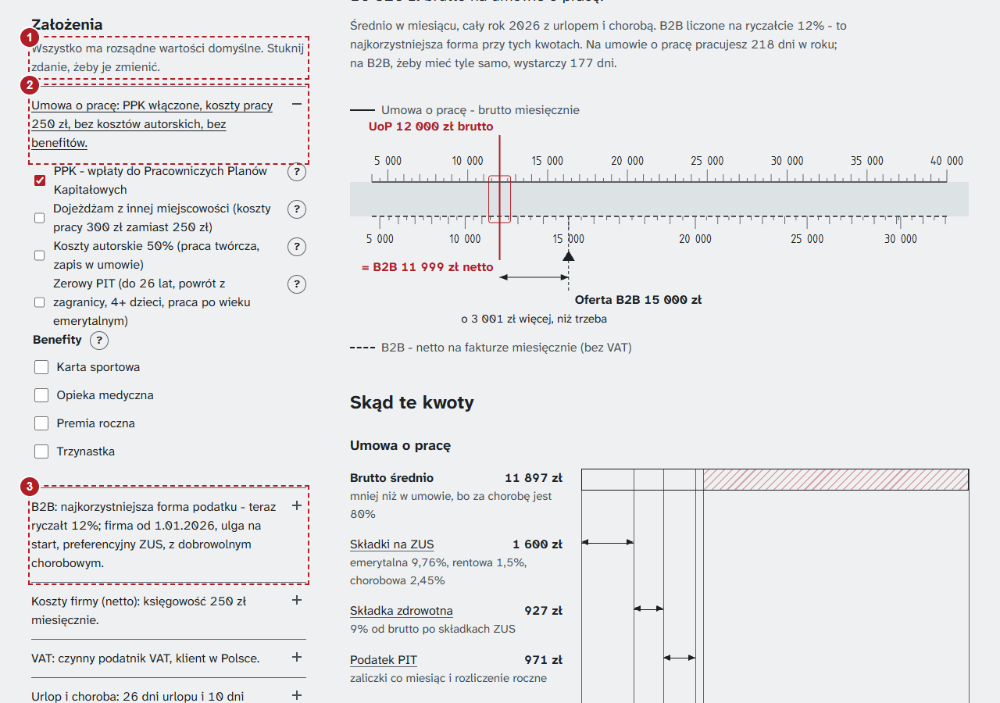
Wartości domyślne. Kto nie chce niczego zmieniać, może tę część pominąć.
Rozwinięta grupa - tu umowa o pracę: PPK, dojazdy z innej miejscowości, koszty autorskie 50%, zerowy PIT i benefity.
Następna grupa - B2B: forma podatku, data założenia firmy i etap ZUS, dobrowolne chorobowe.
Pozostałe grupy to koszty firmy, VAT, urlop i choroba, rozliczenie roczne (wspólnie z małżonkiem, ulga na dzieci) oraz inne umowy, na przykład druga umowa o pracę, zlecenie albo dzieło obok oferty.
Zapisz i udostępnij
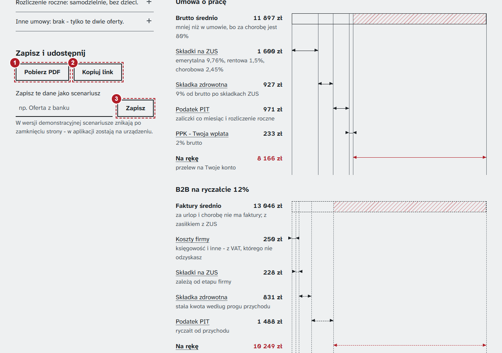
Pobierz PDF - rozbicie obu umów, tabela 12 miesięcy, założenia i data przepisów.
Kopiuj link - adres, który otwiera kalkulator z tymi samymi danymi. Kwoty są w samym linku, nie na serwerze.
Zapisz - zapisuje obecne dane pod wpisaną nazwą, na przykład „Oferta z banku”, żeby później wrócić do nich jednym kliknięciem.
W wersji demonstracyjnej zapisane scenariusze znikają po zamknięciu strony. W aplikacji zostają na urządzeniu.
Rok na miarce
Zakładka „Rok” pokazuje 12 miesięcy jako odcinki miarki. Górna taśma to umowa o pracę, dolna to B2B. Widać na niej, ile dni pracy, urlopu i choroby ma każdy miesiąc i ile taśmy B2B jest „uciętej”, bo za te dni nie ma faktury.
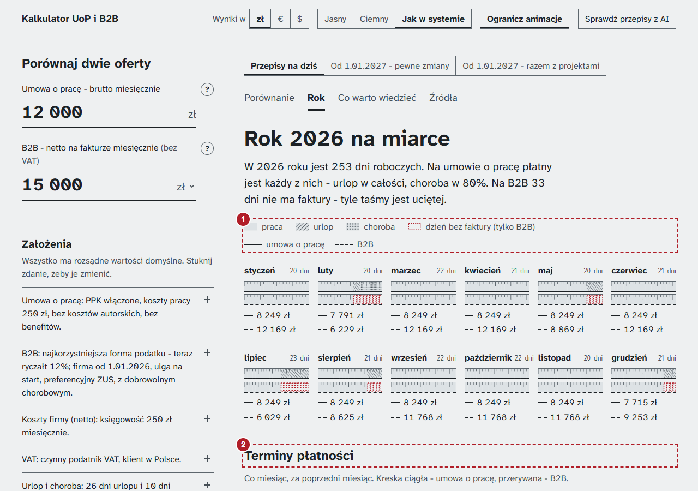
Oznaczenia - praca, urlop, choroba i dzień bez faktury. Linia ciągła to umowa o pracę, przerywana to B2B.
Terminy płatności - co miesiąc i raz w roku: kto płaci ZUS, zaliczkę na podatek i zdrowotną, komu i do którego dnia.
Co warto wiedzieć
Przewodnik po obu umowach, podzielony na rozdziały: formy opodatkowania, ZUS na B2B, VAT, księgowość, pułapki, założenie firmy i umowa o pracę. Przy każdym punkcie jest źródło.
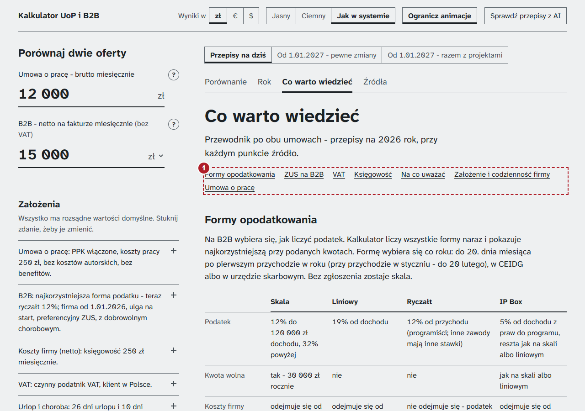
Rozdziały. Kliknięcie przenosi do rozdziału.
Źródła i „Odśwież”
Każda liczba w obliczeniach ma źródło (rozporządzenie, obwieszczenie, ustawę) i datę sprawdzenia.
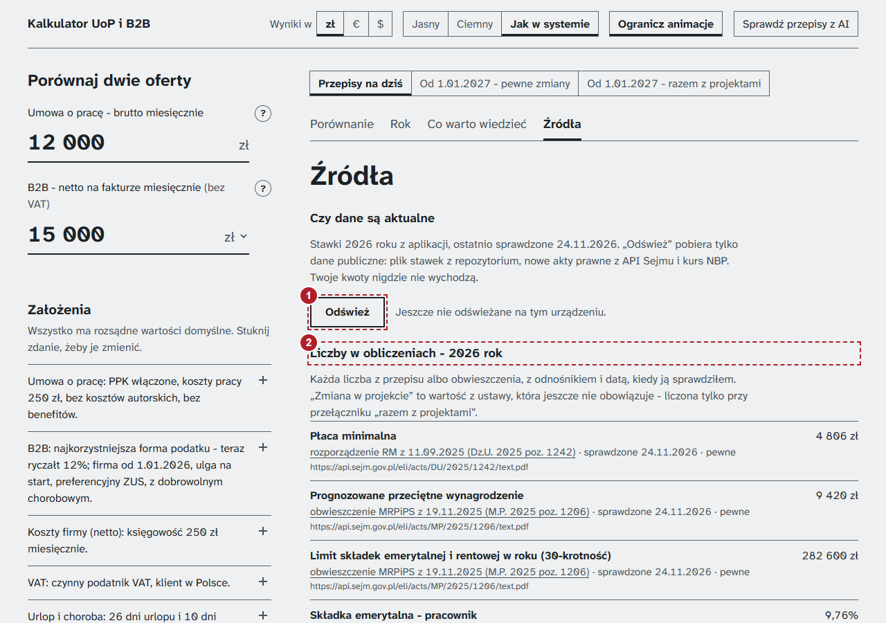
Odśwież pobiera tylko dane publiczne: nowszy plik stawek z repozytorium projektu, listę nowych aktów prawnych z API Sejmu i kurs NBP. Gdy od daty sprawdzenia stawek ukazały się nowe akty o podatkach albo ZUS, pojawia się ich lista z odnośnikami.
Liczby w obliczeniach - każda z odnośnikiem i informacją, czy jest pewna, czy to szacunek.
Sprawdź przepisy z AI
Claude Sonnet z wyszukiwaniem w sieci sprawdza, czy kwoty i daty w kalkulatorze są aktualne. Każdą proponowaną zmianę pokazuje jako „było - jest” ze źródłem i cytatem. Nic nie zmienia się samo: zmianę trzeba zatwierdzić przyciskiem „Zastosuj”, a „Przywróć dane z pliku” cofa wszystkie.
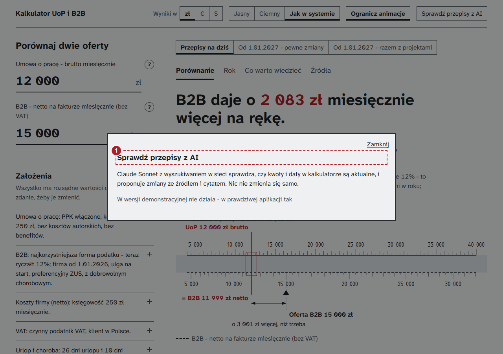
Okno sprawdzania. W wersji demonstracyjnej nie działa. W aplikacji na komputerze trzeba wkleić własny klucz API Anthropic - trafia do sejfu systemu, a na ekranie widać tylko jego końcówkę.
Sprawdzenie zawsze zaczyna się od kliknięcia, nigdy samo.
Dzienny limit wydatków ustawia się w dolarach (domyślnie 1 $). Okno pokazuje, ile wydano dziś, także w złotych po kursie NBP. To szacunek liczony przez aplikację.
Do Anthropic trafiają tylko obecne stawki i lista nowych aktów, nigdy kwoty wpisane w kalkulatorze.
Wygląd, waluta i animacje
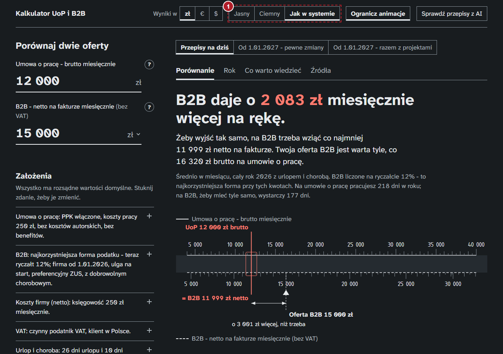
Jasny, Ciemny albo Jak w systemie. „Jak w systemie” zmienia wygląd razem z ustawieniem Windows albo telefonu. Na zrzucie system jest w trybie ciemnym.
Obok jest przycisk Ogranicz animacje. Po jego włączeniu kwoty i dymki zmieniają się od razu, bez ruchu. Kalkulator bierze też pod uwagę takie ustawienie w systemie.
Na telefonie
Na wąskim ekranie wszystko układa się w jedną kolumnę. Najpierw są dwie kwoty, potem wynik, a niżej założenia.
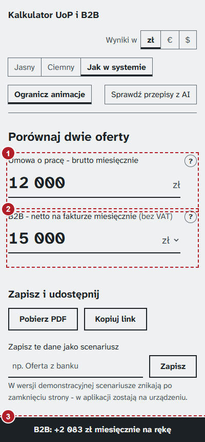
Umowa o pracę - brutto miesięcznie.
B2B - netto na fakturze miesięcznie.
Pasek wyniku zawsze widoczny na dole. Po każdej zmianie od razu pokazuje, o ile B2B daje więcej albo mniej na rękę.
Prywatność
Żadne wpisane kwoty nie wychodzą z urządzenia. Kalkulator nie ma analityki ani reklam. Jedyne połączenia z siecią to „Odśwież” (dane publiczne) i, w aplikacji na komputerze, „Sprawdź przepisy z AI” z własnym kluczem użytkownika.
Kalkulator UoP i B2B - instrukcja. Zrzuty ekranu robi automat z wersji demonstracyjnej, więc zgadzają się z obecnym wyglądem aplikacji. Wróć do kalkulatora